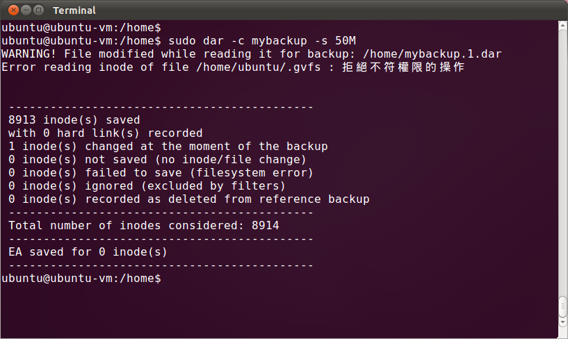
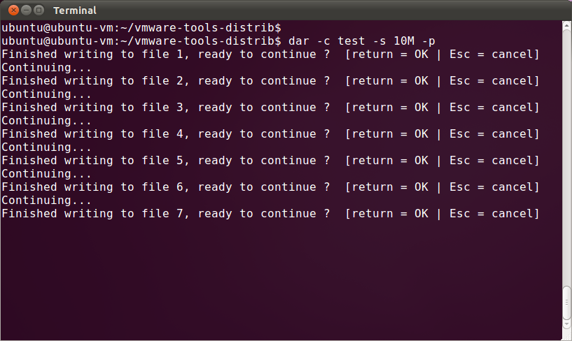
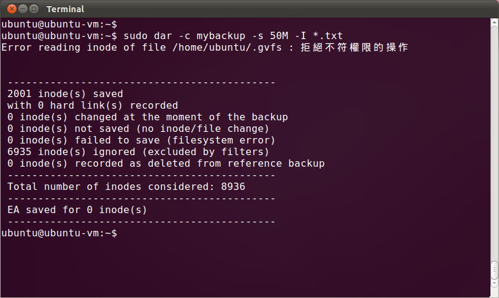
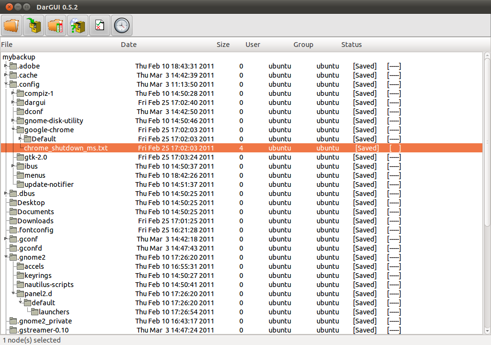
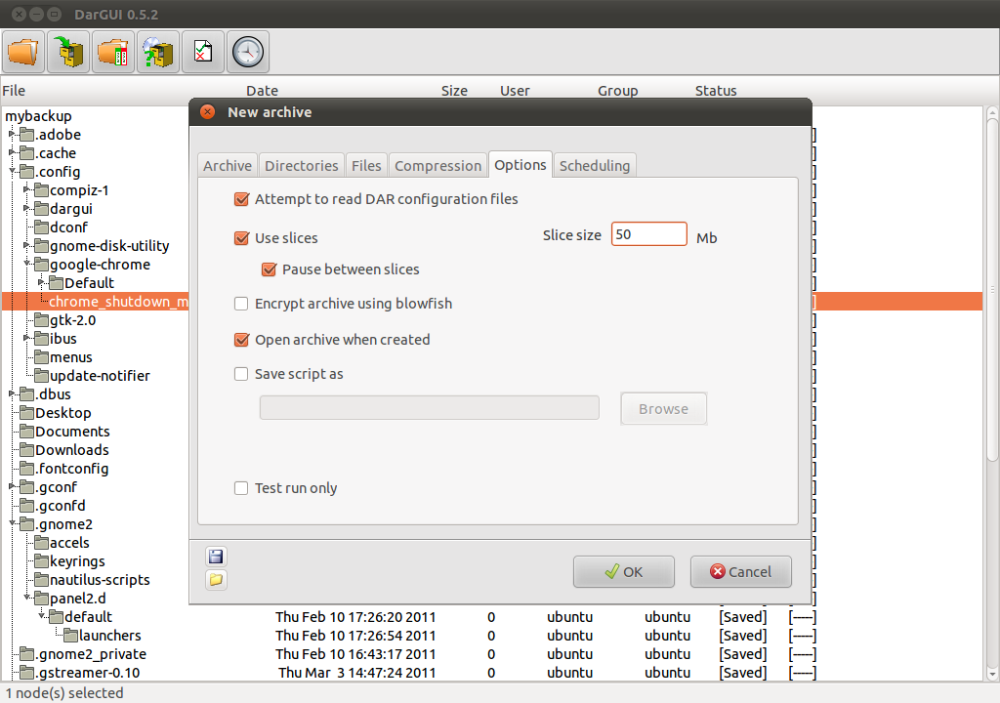
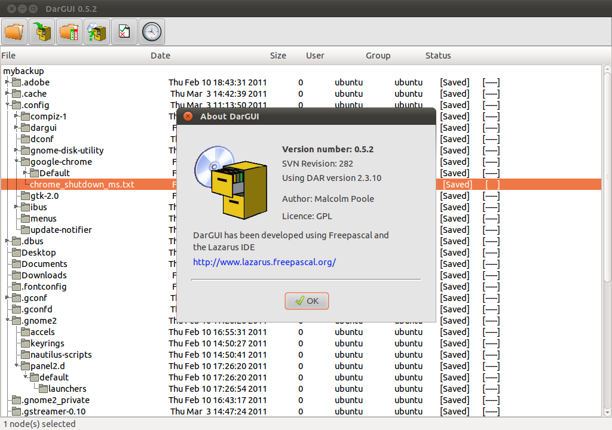

感謝您對「自由軟體鑄造場」的支持與愛護，十多年來「自由軟體鑄造場」受中央研究院支持，並在資訊科學研究所以及資訊科技創新研究中心執行，現已完成階段性的任務。 本網站預計持續維運至 2021年底，網站內容基本上不會再更動。
也紀念我們永遠的朋友 李士傑先生（Shih-Chieh Ilya Li）。
也紀念我們永遠的朋友 李士傑先生（Shih-Chieh Ilya Li）。
以磁碟為主要處理對象的備份工具 - DAR & DarGUI
Created at Saturday, 05 March 2011 01:49 Last Updated on Tuesday, 08 March 2011 03:17
DAR 簡介
想在 UNIX/Linux 系統上備份檔案有許多選擇，最知名的莫過於 tar 指令。傳統的 tar 指令只能打包檔案，不支援壓縮功能，但透過管線轉向的方式並搭配 gzip、bzip2 等指令，或是直接使用較新版本的 tar 指令，都可以同時打包並壓縮檔案。如果使用者不熟悉 tar 指令，亦可選擇安裝 zip/unzip 或 rar/unrar 等套件來備份與壓縮檔案。DAR:
官方網站：https://dar.linux.free.fr/
原始檔網址：https://ncu.dl.sourceforge.net/project/dar/dar/2.3.10/dar-2.3.10.tar.gz (1.3MB)
（大多數 Linux 發行版本均有內建 DAR 套件，例如 Red Hat、SUSE、Gentoo 與 Ubuntu 等，可直接使用該發行版本的套件管理程式進行安裝。）
DarGUI:
官方網站：https://dargui.sourceforge.net/
下載網址：https://nchc.dl.sourceforge.net/project/dargui/dargui/0.5.2/dargui-0.5.2_i386.deb (2.3MB)
使用 tar 指令打包與壓縮檔案雖然方便，但 tar 指令卻存在著一個問題：tar 指令不支援以分割檔案的方式，進行檔案打包與壓縮。假設主機上的備份裝置只有 DVD 燒錄機，但打包好需要備份的檔案遠超過 4.37 GiB（或 4.7 GB），此時便無法直接將打包完成的檔案備份到其他儲存媒體上。就算使用 Double Layer 的 DVD 光碟片進行備份，也仍然有 8.75 GiB（或 9.4 GB）的容量限制問題。當然遇到此類問題時，仍然有許多解決辦法，例如直接複製檔案存入外接硬碟，或是藉由網路將檔案傳輸到另一部主機的硬碟空間。但這樣的解決方案，都無法將檔案備份到相對而言比較穩定的光碟儲存裝置之中，對於備份檔案的安全性而言，仍然無法讓人放心。有些人可能會透過 split 指令，先將打包後的檔案進行分割，再依序處理所有檔案。只是這樣的備份檔案需要先後使用二個指令，使用者不免覺得麻煩。
所幸在 UNIX/Linux 系統上打包與備份，並不是只有 tar 一種解決方案。大多數 Linux 發行版本中，都提供一套名為 DAR 的套件可以作為檔案打包、備份的另一種選擇。DAR 這套工具的全名為 Disk ARchive（磁碟備存），本身是以 Shell 命令備份檔案。 DAR 與 tar 相當類似，都是用於打包及壓縮檔案或目錄，二者最大的差異是，DAR 打包後的檔案，主要是輸出到磁碟儲存裝置。由於使用的是磁碟裝置，輸出檔案時自然會面臨各種磁碟裝置的容量上限問題，因此 DAR 採用了分割方式，也就是依照使用者指定的參數將輸出檔案進行切割，並儲存成數個分割檔案。這些分割檔案被稱為 slice，可以依照不同的輸出裝置調整檔案大小。例如，檔案輸出時要使用軟碟機、CD-R 光碟燒錄機、DVD-R 光碟燒錄機，或是已經快被眾人遺忘的 ZIP Drive 等裝置進行備份，即可依照上述輸出裝置的容量上限，調整每一個 slice 的大小。

▲ DAR 是以 Shell 命令的方式進行作業。
由於打包檔案可能會佔用許多磁碟空間，即使事先指定以分割方式進行處理，仍然需要預留足夠的磁碟空間，才能存放這些打包後的分割檔案。如果系統上的磁碟剩餘空間不足，備份檔案時可能會發生些許問題。對此 DAR 提供了一項非常特別的設計。亦即，在建立每一個 slice 之後，可以暫停動作，讓使用者先行處理其他工作，或是直接執行 Shell Script，繼續該 slice 的後續處理。例如打包並切割後的檔案要備份到 CD-R 光碟片，即可要求 DAR 建立一個 slice 之後，先將該 slice 備份到 CD-R 光碟片中，完成後再切割出下一個 slice 及其它備份工作。

▲ DAR 在每一個 slice 建立完成後，可以暫停執行以便讓使用者進行其他處理。
DAR 的主要特色
除了打包檔案的切割與壓縮功能外，DAR 也擁有許多其他備份工具無法兼備的特色。例如差異化備份功能，即為 DAR 最重要的特色之一。在大部份的情況下，前後二次備份系統之間，系統上的檔案多半只有一部份經過變動，如果二次均全數重新備份，將會相當耗時費力。但 DAR 所支援的差異化備份模式，可以自動比較二次備份，辨認出新增或變更過的檔案，並只處理這些檔案，所以能採用較有效的方式備份系統。如果系統發生問題需要回存備份檔案，只需要先回存先前的完整備份檔，再回存後續的差異備份檔，即可將檔案系統恢復至原先的狀態，即使原先的完整備份檔包括事後已經被刪除的檔案，也不會產生處理上的問題。DAR 在進行備份作業時，也可使用過濾器，指定需要備份的檔案。例如需要連同檔案目錄一起備份時，可能有些不必要的檔案不希望被加入備份檔之中（例如暫存檔或不重要的記錄檔），此時就可以利用過濾器的功能，將這些檔案排除在備份檔案的範圍之外。相反的，如果有某些檔案一定要進行備份，就可使用過濾器的含括功能，將這些檔案列為必需備份的檔案之一。而且無論在建立或解開備份檔案時，都能套用過濾器功能。過濾器是以檔案名稱作為處理依據，但並未限定只能處理檔案，如果備份時需要或不需要子目錄，亦可使用過濾器進行處理。

▲ DAR 可以利用過濾器功能，將檔案包含或排除在備份檔案之列。
由於備份時通常會產生一個相當大的檔案，因此經常使用壓縮模式。但有時候需要從備份中還原某一個檔案，而不需要將整個備份目錄回存，此時便需要備份工具提供直接存取功能，使用者才能在不需要解開整個備份，直接將某個檔案回存至系統中。DAR 就支援直接存取功能。需要使用直接存取功能時，DAR 會先讀取備份的索引目錄資訊，直接找到欲回存檔案在備份中的位置，並回存該檔案至系統中。如果備份時使用了分割功能將備份切成好幾個 slice，則 DAR 會告知使用者該檔案位於哪一份 slice 之中，並要求使用者提供該 slice ，即可回存該檔案。
除了上述功能以外，比較值得一提的是，DAR 還支援測試功能與管線功能。其中，測試功能可以直接測試備份，以確定備份中資料是否損毀，並將測試結果告知使用者。如果只想確認備份檔的正確性，不想花時間解開整個備份，選擇使用測試功能會比較方便。管線功能則允許 DAR 將備份結果輸出到標準輸出介面，或是轉向至其他軟體進行後續處理。相反的，DAR 也可以接收經由管線轉向而來的資料，並進行回存處理。操作管線轉向功能較為複雜，但 DAR 的功能也因此能發揮到極致。
雖然大多數人通常會在 Linux 系統中使用 DAR，這並不代表 DAR 只能在 Linux 系統中使用。相反的，使用者已經在許多不同的作業系統平台上測試過 DAR，而且執行時也沒有因而產生問題。這些作業系統包含 Windows、Solaris、FreeBSD、NetBSD 與 MacOS X 等等，幾乎涵蓋了所有主流的作業系統。而在 DAR 2.0.0 版之後，DAR 也開始提供應用程式介面（即 API），讓有意為 DAR 開發相關程式者，也能直接使用這些 API 進行資料處理。這樣的運作模式同時也為 DAR 帶來許多好處－若有使用者認為文字介面的 DAR 在操作上不夠便利，可以選擇使用利用這些 API 所開發的 DAR 圖形使用者介面，例如 KDar 與 DarGUI 。
DarGUI 簡介
從 DarGUI 的名稱之中即可得知，這套工具是以圖形前端介面操作 DAR 的應用程式。DarGUI 是以 GTK+ 進行開發，也由於大多數的 Linux 發行版本都支援 GTK+ 程式庫，因此大部份的 Linux 發行版本上都可以執行 DarGUI。會出現 DarGUI 自然是因為 DAR 的參數與選項很多，造成備份作業較複雜，對於剛接觸 DAR 的使用者來說，也是一項嚴苛的考驗。但有了 DarGUI 的輔助，即可使用最直覺的操作介面，直接利用 DAR 備份資料，減輕許多使用者的負擔。
▲ DarGUI 提供了 DAR 的圖形操作前端介面。
事實上 DarGUI 並不是第一個 DAR 的圖形前端介面，先前也曾經出現過 KDar 這套軟體，提供了類似 DarGUI 的功能。但 KDar 在 2007 年 12 月釋出最後一個版本之後，已經長達三年不曾更新。再加上 KDar 是針對 KDE 所設計，而 KDE 這幾年來已經產生相當程度的變化，所以即使是「最新」版本的 KDar，也已經無法在目前大多數的 Linux 發行版本上執行。這樣的過程，也是促使 DarGUI 作者開發一套全新 DAR 使用者介面的主要原因。
由於 DarGUI 的主要特色都是基於 DAR 提供的功能，它只是 DAR 的前端介面，提供使用者以圖形介面進行操控，可以降低使用上的難度，減少不必要的困擾，卻依然能使用 DAR 提供的各式功能。例如使用者可以利用 DarGUI 直接查看 DAR 備份中的內容，或是在備份中點選開啟要解開的檔案。選擇欲解開的檔案時，亦可使用特定關鍵字進行搜尋，以過濾不必要的檔案。如果想要了解備份檔案的相關統計資訊，也能以 DarGUI 直接瀏覽相關資訊，例如備份中所包含的檔案數量，或是檔案壓縮的相關資訊等等。而在建立備份檔案時，使用者也能藉 DarGUI 的介面直接方便地進行處理。使用者只需要指定一些必要選項，例如 slice 的大小、是否採用壓縮功能，以及決定檔案或目錄的過濾關鍵字，即可立即備份資料。

▲以 DarGUI 建立備份檔案相當方便，所有 DAR 所支援的選項都能且接在畫面上進行設定。
如果要進行的是差異化備份功能，或是要檢查備份的正確性，也能直接使用 DarGUI 進行處理。此外，DarGUI 還能使用比對功能進行檢查，找出備份檔案與原系統存放的檔案間是否有差異，方便使用者決定如何備份或回存。如果希望定期備份，DarGUI 也提供了排程功能。使用者可以指定定期備份的週期，或是在指定的時間點備份。由於作者也提到可能有許多功能並未被考慮到，作者相當歡迎任何人提出針對 DarGUI 功能上的看法與建議。目前仍然有許多人持續開發 DarGUI，只要提出的是技術上可行的建議方案，便會在後續版本中陸續加入這些新功能。
英文是 DarGUI 操作介面的預設語言，但 DarGUI 也支援數種不同的語言，包含法文、西班牙文、德文以及瑞典文。雖然 DarGUI 缺少熱心人士協助中文化，目前尚未支援正體中文，將來仍然有可能釋出 DarGUI 中文版本。但即使是使用英文介面，由於 DarGUI 已經簡化 DAR 的操作過程，只要事先熟悉軟體的使用方式，使用時也不至於發生太大問題。

▲ DarGUI 目前仍是以英文介面為主，但本身已經提供了多國語系支援功能。
結語
使用開放原始碼的作業系統或是工具程式，在功能支援上永遠有無限的可能。比方，tar 指令不夠友善，便出現 DAR 這種改進後的備份工具；而 DAR 的操作介面為人垢病，便出現 圖形使用者介面的 DarGUI。或許目前這些工具的表現都稱不上盡善盡美、毫無缺點，但只要開發團隊持續維護，或具備相關技術能力的人可以提供支援，在不久的將來，這些軟體都可能提出更多新功能，以滿足各種不同的需求者。作者簡介
翁卓立逢甲大學資訊工程學系、台灣科技大學電子所畢業，目前擔任韌體研發工作，主要使用 Embedded Linux 進行產品開發。著有「Linux 進化特區：Ubuntu 10.04 從入門到精通」等書。
Special


Open Source Software Foundry‧ Best Viewed with IE7.0 or Firefox2.0 above, 1024x768 Resolution. E-Mail：contact@openfoundry.org
Address：No.128, Sec.2, Academia Rd., Institute of Information Science, Academia Sinica, Nangang District, Taipei City 11529, Taiwan (R.O.C).
Privacy Policy. Terms-of-use
Address：No.128, Sec.2, Academia Rd., Institute of Information Science, Academia Sinica, Nangang District, Taipei City 11529, Taiwan (R.O.C).
Privacy Policy. Terms-of-use